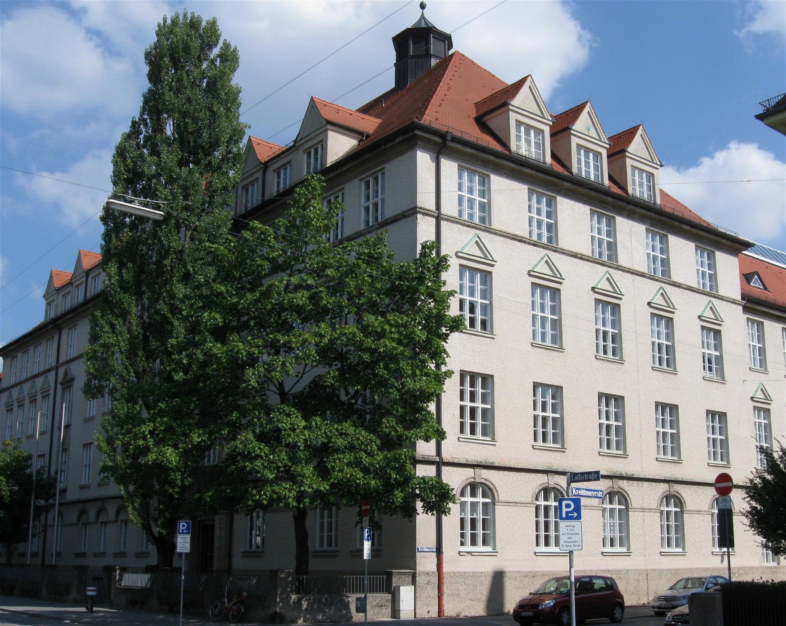
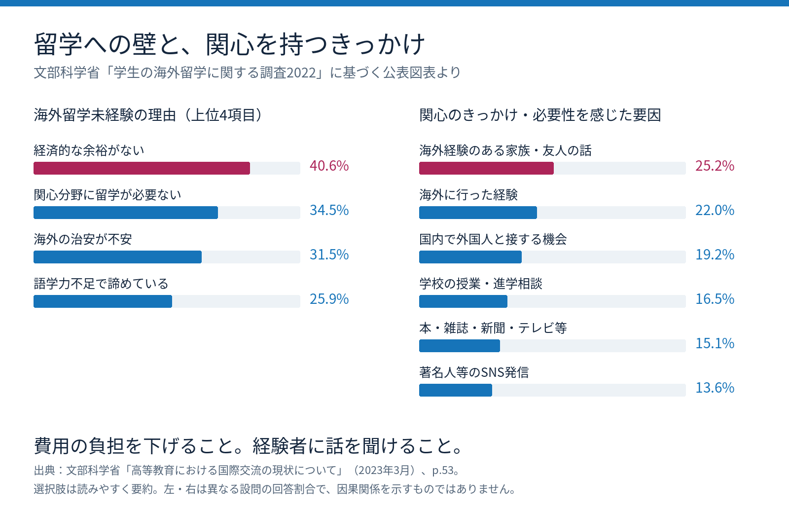
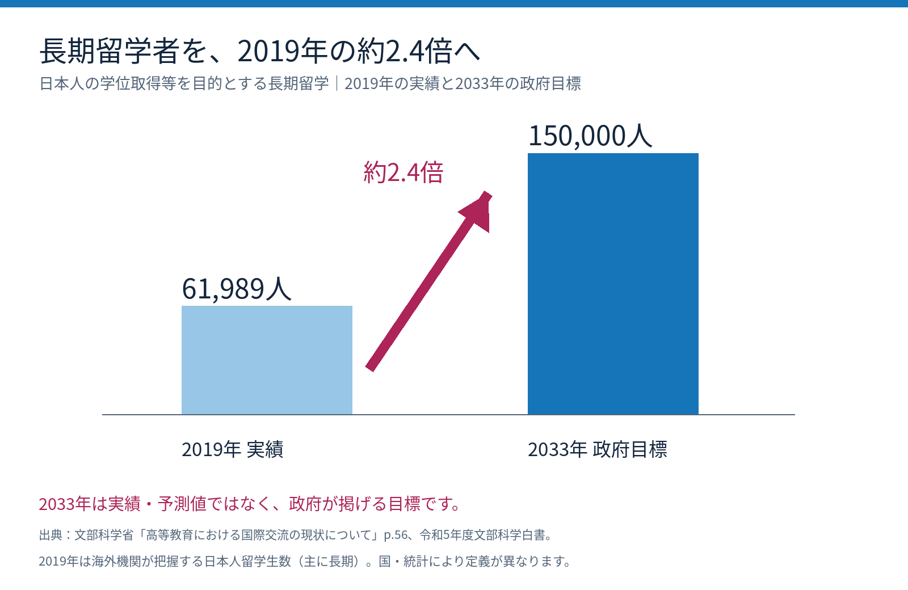
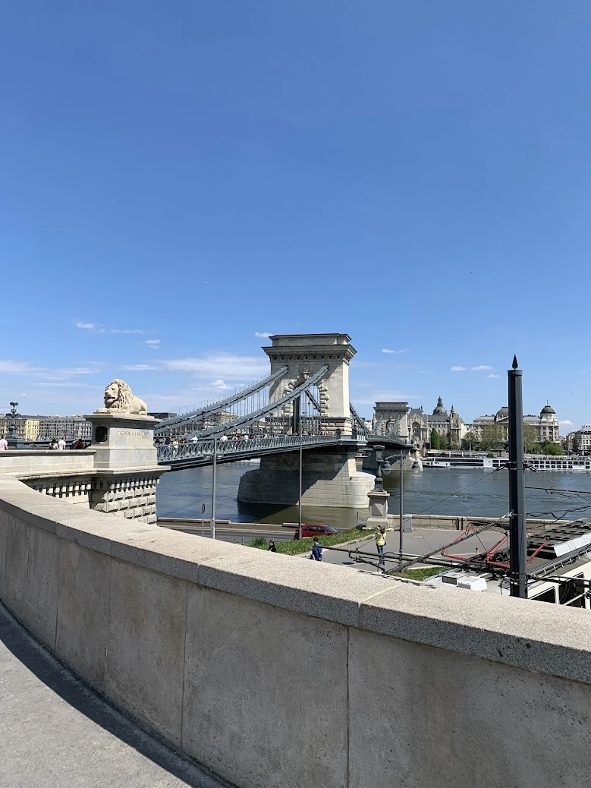

留学を、一部の人の特権にしない。
― ドイツ留学ラボの立ち上げに寄せて｜ハンガリー留学ラボ運営者からのメッセージ
Budapest University of Economics and Business
カネコ｜Tourism Management 修士2年
私も、最初はドイツ留学を目指していました。

実は、私が最初に目指していたのは、ハンガリーではなくドイツの大学院でした。
ドイツには世界的に評価される大学や研究機関があり、研究水準の高さはもちろん、ものづくりへの姿勢や合理性、洗練された文化にも、日本と通じるものを感じていました。
そして何より、授業料の負担が比較的小さく、英語で学べる大学院プログラムがあることも大きな魅力でした。
当時、私はミュンヘン応用科学大学で起業論を学ぶことを考えていました。
しかし、一つだけ大きな不安がありました。
それは、お金です。
私は20代の頃、日本の大学に通いながら経済的に苦しい生活を送り、やむを得ず借金をした経験があります。当時は生活費や返済の心配が絶えず、授業に集中することさえ難しい日々でした。
だからこそ、もしもう一度大学で学ぶなら、今度は経済的な不安をできる限り減らし、安心して勉強に打ち込める環境を選びたいと考えていました。
その後、ドイツやイギリスの大学院にも合格しましたが、最終的には授業料の免除に加え、生活費などの給付を受けられるハンガリー政府奨学金「Stipendium Hungaricum」を獲得し、ハンガリーへの進学を決めました。
ドイツへの憧れがなくなったわけではありません。
ただ、私にとっては、経済的な安心を得たうえで学べることが何よりも大切だったのです。
数十万円を支払った留学エージェントへの失望
ドイツ留学を準備していた頃、私は2つの留学エージェントに合計数十万円を支払いました。
当時は仕事が忙しく、情報収集や出願準備に十分な時間を割くことが難しかったため、専門家に依頼することで時間を節約しようと考えたのです。
ところが、期待していたサービスとは大きく異なりました。
提供された大学情報は、Wikipediaや大学の公式サイトを調べれば分かるような一般的な内容ばかり。AIにまとめさせただけではないかと感じるほど、個別性に欠けていました。
しかも、問い合わせに対する返信も遅い。時間を節約するために依頼したはずなのに、自分で調べた方が圧倒的に早かったのです。
結局、サービス内容に納得できず返金を求め、最終的に一部を返金してもらいました。
もちろん、親身になって支援してくれる優れた留学エージェントもあると思います。
しかし、そもそも留学費用を抑えるために授業料の安いドイツの大学を目指しているのに、その準備のために何十万円も支払わなければならないことに、私は強い違和感を覚えました。
大学の本当の特色は、公式サイトだけでは分からない。
大学の公式サイトには、「世界水準の教育」「充実した学生サポート」といった魅力的な言葉が並んでいます。
しかし、実際の大学の特色や教育方針、学生に求められる姿勢は、そうした宣伝文句だけではなかなか見えてきません。
私自身、海外大学院への出願を経験して感じたのは、海外大学の入学審査は、日本の就職活動における面接と少し似ている部分があるということです。
もちろん、学力や英語力などの出願要件を満たしていることは大前提です。
ただ、それだけでは十分ではありません。
なぜその大学で学びたいのか。大学の教育方針や価値観と自分の目標が合っているのか。入学後も意欲を持って学び続けられるのか。そして、その大学や他の学生にどのような貢献ができるのか。
大学側も、そうした点を見ているように感じました。
つまり、単に優秀な学生を選ぶのではなく、その大学に合った学生を選ぶという視点があるのだと思います。
だからこそ、大学の公式サイトに書かれた美辞麗句を覚えるだけではなく、その大学が実際にどのような教育を行い、どのような学生を求めているのかを理解することが重要です。
そして、それを知るうえで頼りになるのが、実際にその大学で学ぶ現役生や卒業生の声です。
授業の雰囲気、教授との距離感、学生へのサポート、大学が大切にしている考え方。そうした実態を知ることで、自分に本当に合った大学なのかを判断しやすくなります。
留学先を選ぶことは、単に大学の知名度やランキングで選ぶことではありません。自分の価値観や将来の目標に合った環境を見つけることでもあるのです。
留学準備を通じて、私はそう感じるようになりました。
留学を止めるのは「お金」。背中を押すのは「身近な経験者」。

留学について考えたとき、多くの人がまずぶつかるのは、やはり費用の問題です。実際、「経済的な余裕がない」ことは、留学をしない理由として最も大きなものの一つです。
一方で、留学に興味を持つきっかけとして大きいのは、「身近な人の話」でもあります。
つまり、留学を広げていくためには、費用の壁を下げることと、自分に近い経験を持つ人にアクセスできることの両方が大切なのです。
特別な経歴を持った人の成功談だけでは、「すごい人だからできたんだ」と思ってしまうことがあります。
でも、自分と同じように悩み、迷いながらも挑戦した人の話には、「もしかしたら自分にもできるかもしれない」と思わせる力があります。
私に足りなかったのは、能力ではなく自信だった。
私は30歳を過ぎてから、本格的に英語の勉強を始めました。スタート地点は英検2級でした。
そのため、帰国子女やインターナショナルスクール出身者の華々しい留学体験談を読んでも、なかなか自分の参考にはなりませんでした。そもそもスタート地点が違うと感じていたからです。
「自分のような人間でも、海外の大学院に合格できるのだろうか」
「30歳を過ぎてから英語を学び始めた人間が、今から挑戦してもいいのだろうか」
そんな不安があり、なかなか最初の一歩を踏み出せずにいました。
転機になったのは、LinkedInで出会った一人の日本人の方でした。
その方も30歳を過ぎてから英語を学び始め、イギリスでMBAを学んでいました。いわゆる華やかな経歴を持つ方ではありませんでしたが、英語学習やGMATの対策、大学院への出願方法、奨学金などについて、実際の経験を聞かせてくれました。
話を聞いているうちに、私はふと思いました。
「この人にもできたのなら、自分にもできるかもしれない」
それまで遠い世界の話だと思っていた海外大学院への進学が、急に現実的な選択肢に感じられるようになったのです。
そして実際に挑戦した結果、ドイツやイギリスの大学院に合格することができました。
今振り返ってみると、一つ気づくことがあります。
私は最初から、合格を目指せるだけの能力や条件を持っていたのだと思います。
それなのに、自分自身がその可能性を信じられずにいました。
「自分なんかが応募してもいいのだろうか」
「本当に受かる可能性があるのだろうか」
そうした不安が、行動をためらわせていたのです。
私に足りなかったのは、必ずしも能力ではありませんでした。
一歩を踏み出すための、自信だったのです。
「あなたにも挑戦できます」の一言が、人生を変える。
ハンガリー留学ラボを通じて大学に合格された方にも、似たような経験があります。
その方は30代後半で、二度目の学部進学を考えていました。目指していたのは、それまで全く経験のなかったコンピュータサイエンス分野です。
新しい分野を学び、キャリアチェンジを実現したいという思いから、海外大学への進学を検討されていました。
しかし、ご本人には大きな不安がありました。
「この年齢で、しかも一度大学を卒業しているのに、もう一度学部に入学してもいいのでしょうか」
日本では、大学を卒業したら就職し、その後は同じ分野でキャリアを積んでいくという進路が一般的かもしれません。そのため、30代後半から再び大学の学部に入学することに、心理的なハードルを感じるのも無理はないと思います。
しかし、ヨーロッパでは事情が少し異なります。
大学を卒業した後に別の学部で学び直す人もいますし、社会人経験を積んでから大学に戻り、新しい専門分野を学ぶ人も珍しくありません。キャリアチェンジのために、これまでとは全く異なる分野の学位取得を目指す人もいます。
卒業後、すぐに就職することだけが人生ではありません。
学び直しや進路変更は、世界では決して珍しいことではなく、自分に合ったタイミングで学びを選び直すことも、十分に自然な選択肢です。
私は、そうした事実をお伝えしました。
そして、詳しくお話を伺ってみると、その方は志望大学の出願要件も十分に満たしていました。つまり、挑戦するための条件はすでに整っていたのです。
特別な魔法のようなアドバイスをしたわけではありません。
ただ、ご本人が「自分には無理なのではないか」と思い込んでいたことに対して、必ずしもそうではないとお伝えしただけです。
その後、その方は実際に出願し、見事、知名度の高い大学2校から合格を勝ち取りました。
もちろん、合格できたのはご本人の能力と努力があったからです。
私たちが代わりに勉強したわけでも、合格を保証したわけでもありません。
ただ、もし相談する機会がなく、「自分には無理だろう」と最初から諦めていたとしたら、その可能性に気づくことさえなかったかもしれません。
留学支援とは、単に大学の情報や出願方法を伝えることだけではない。
本人がまだ気づいていない可能性を一緒に見つけ、最初の一歩を踏み出す後押しをすることにも、大きな価値があるのだと思います。
海外で学ぶことは、一部の人だけの特別な進路ではない。

海外で学ぶことは、昔に比べてずっと現実的な選択肢になっています。
実際、日本政府も、学位取得などを目的とする日本人長期留学者を、2019年の約6.2万人から2033年に15万人へと増やす目標を掲げています。これは約2.4倍です。
つまり、海外で学ぶことは一部の限られた人のための特別な進路ではなく、国としても後押ししている進路の一つだと言えます。
それでも、情報不足や経済的な不安、自信のなさによって、本来見えていたはずの選択肢が、自分の中から消えてしまうことがあります。
だからこそ、現実的な制度やルートを知り、実際に挑戦した人の声に触れることが大切なのだと思います。
留学を、一部の人の特権にしない。
海外留学には、確かにお金がかかります。語学力も必要ですし、情報収集や出願準備にも多くの時間と労力が必要です。
家庭の経済状況や周囲の環境によって、最初から留学を選択肢に入れられない人もいるでしょう。
しかし、ヨーロッパには、授業料の負担が比較的小さい大学や、奨学金を活用することで経済的な負担を抑えて学べる制度があります。
そうした選択肢を知らないまま、留学を諦めてしまうのは、あまりにももったいないことだと思います。
また、十分な能力や条件を持っているにもかかわらず、「自分には無理だ」と思い込んでいる人もいます。私自身が、かつてそうでした。
だからこそ、ハンガリー留学ラボでは、実際に現地で学ぶ日本人学生と、これから留学を目指す人を直接つなぐ仕組みをつくりました。
留学エージェントに何十万円も支払わなくても、現役生から大学生活の実情を聞くことができる。
英語力への不安や、経済的な悩み、年齢やキャリアに対する迷いも、実際に留学を経験している人に相談できる。
そして、「自分にもできるかもしれない」と感じてもらえる。
そんな場所をつくりたいと考えています。
もちろん、誰もが希望する大学に合格できるわけではありません。留学がすべての人にとって最良の選択だとも思いません。
それでも、経済的な事情や情報不足、あるいは自分自身への思い込みによって、本来あるはずの可能性が閉ざされてしまうことは、少しでも減らしたい。
留学を、特別な家庭環境や経歴を持つ一部の人だけのものにしたくない。
これが、私がハンガリー留学ラボを始めた理由です。
ハンガリーからドイツへ。現役生の皆さんとともに。

そして今、ハンガリーで始まったこの取り組みを、ドイツにも広げていきたいと考えています。
ドイツには、授業料の負担を抑えながら、質の高い教育を受けられる大学が数多くあります。
しかし、情報不足や経済的な不安、あるいは「自分には難しいのではないか」という思い込みから、挑戦をためらっている方もいると思います。
だからこそ、ドイツで実際に学んでいる日本人現役生の皆さんのお力をお借りしながら、これからドイツ留学を目指す方々に、現地のリアルな情報や経験を届けていきたいと考えています。
大学の公式サイトだけでは分からない授業の実態や学生生活、出願準備で苦労したこと、実際に留学して初めて気づいたこと。そうした一人ひとりの経験が、これから挑戦する誰かにとって、大きな助けになるはずです。
かつての私が、一人の留学経験者との出会いに背中を押されたように。
今度は私たちが、誰かの最初の一歩を後押しできたらと思っています。
留学を、一部の人の特権にしない。
ハンガリーで始まったこの仕組みを、ドイツの現役生の皆さんのお力をお借りしながら、ドイツ留学を目指す方々にも広めていきたいと思っています。
そして、ドイツ留学ラボが、誰かにとって「自分にもできるかもしれない」と思えるきっかけになれたら嬉しいです。
校舎写真：Rufus46／CC BY-SA 3.0（WebP形式に変換）